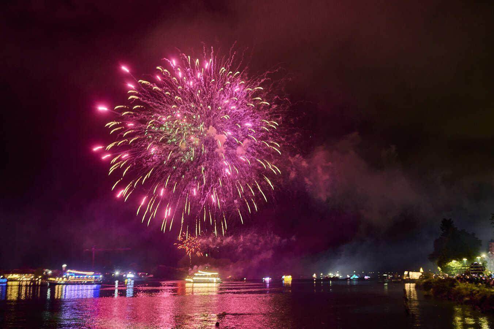

Festivals · Culture
Noche Valdiviana 2027
- Dates
- Dates TBA
- Venue
- Costanera de Valdivia
- Location
- Valdivia, Chile
- Format
- In-person
- Category
- Culture
- Industry
- Traditional festival / River parade
- Organiser
- Municipalidad de Valdivia
- Official website
- https://munivaldivia.cl/2026/03/02/una-jornada-epica-noche-valdiviana-2026-encanto-a-miles-de-personas-en-una-postal-que-quedara-en-la-memoria/
About
Summer-closing celebration with an illuminated river parade (corso fluvial) and fireworks on the Calle-Calle river. The municipality's 2026 review quotes the police chief on 'una multitud cercana a las 60 mil personas' (police estimate, not used as an organiser figure).
Topics: river parade, fireworks, local culture.
No organiser attendance figure found on the official pages checked (24 Nov 2026). Ranked by an estimated size tier 'large' (about 10,000-100,000 attendees; our judgement from format, venue and scale, not an official number).
Sources
- Official — https://munivaldivia.cl/2026/03/02/una-jornada-epica-noche-valdiviana-2026-encanto-a-miles-de-personas-en-una-postal-que-quedara-en-la-memoria/